Validated Core50
Fifty tasks selected from 664 executable tasks retain broad coverage and algorithm discrimination.

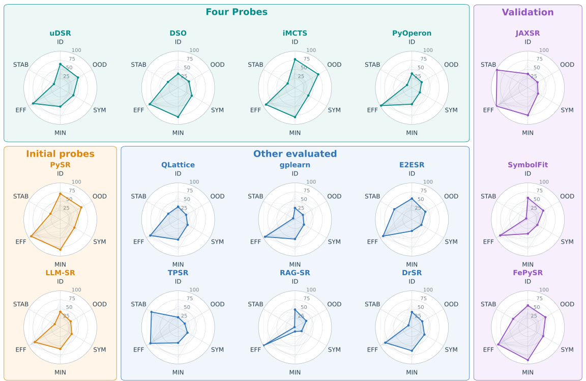
Open-source symbolic regression
SymbolicArena distills 664 tasks into the validated Core50 benchmark and records how 15 symbolic regression methods discover equations over time.
01 / THE FRAMEWORK
Compare diverse methods with the same tasks, execution protocol, and evaluation axes.
Fifty tasks selected from 664 executable tasks retain broad coverage and algorithm discrimination.
Algorithm wrappers share a run protocol while preserving each method's native search behavior.
ID, OOD, SYM, MIN, EFF, and STAB describe numerical quality, symbolic recovery, and search behavior.
02 / EXPERIMENT EXPLORER
Choose an algorithm, task, training noise level, and seed. Inspect every minute of a three-hour run.
Predictions are precomputed from recorded artifacts. Missing checkpoints and candidates that cannot be plotted retain their recorded status.
Loading experiment catalog…
Scores use the paper's clipped log-NMSE scale (0–100). Gaps indicate unavailable checkpoint evidence.
Waiting for experiment data
R² values come from the recorded checkpoint. Training noise changes training labels; evaluation uses the original labels.
03 / THE RESEARCH
Figures and six-axis scores from SymbolicArena, arXiv:2609.35113v1.
Compare all 15 methods across six evaluation axes. Select an axis to rank the table.
Loading published scores…
Scores are published Core50 averages on a 0–100 scale from Tables 2, 14, and 15. Ranks apply to the selected axis. The noise buttons here update published results; the Explorer has its own run controls.
Select up to four algorithms in the table.
Published Core50 averages on a 0–100 scale. Choose an algorithm and noise level in the explorer to update this chart.
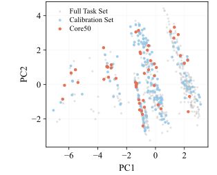
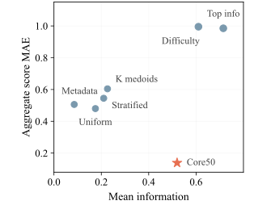
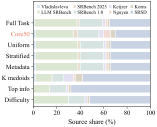
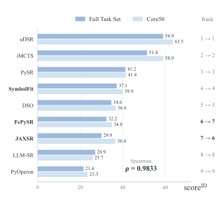
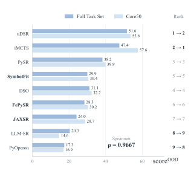
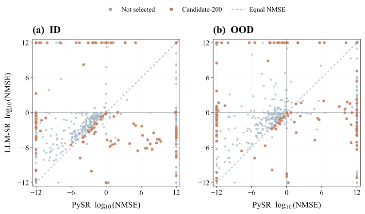
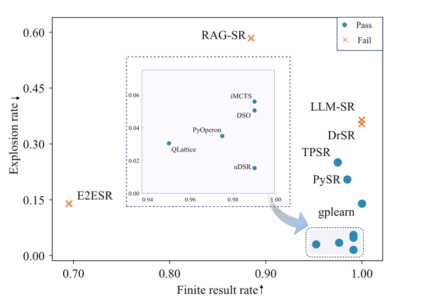
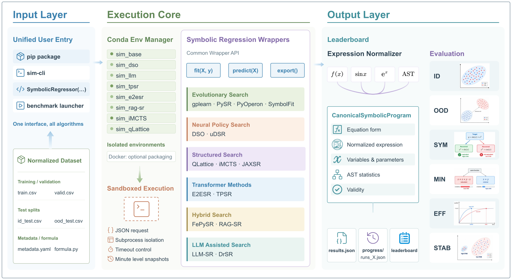
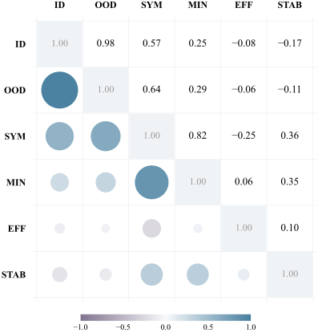
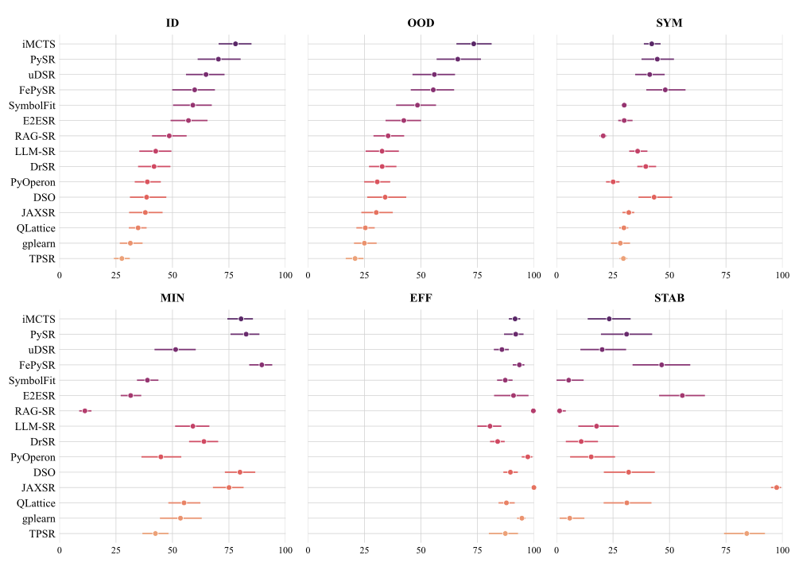
Figures reproduced from Zhang et al., SymbolicArena, arXiv:2609.35113v1 (CC BY 4.0). The interactive scores use the published tables; trajectory curves use the selected run's recorded checkpoint metrics.
04 / TAKE IT FURTHER
This site explores recorded runs. Use the project API to search for equations on your own data.
Build a feature matrix X and target vector y.
Create a regressor with an algorithm such as gplearn.
Fit the model, then inspect its selected expression and predictions.
import numpy as np
from scientific_intelligent_modelling.srkit.regressor import SymbolicRegressor
rng = np.random.RandomState(0)
X = rng.rand(100, 2)
y = X[:, 0] ** 2 + X[:, 1] + 0.01 * rng.randn(100)
regressor = SymbolicRegressor(
"gplearn",
problem_name="quickstart",
seed=42,
population_size=500,
generations=10,
)
regressor.fit(X, y)
print(regressor.get_optimal_equation())